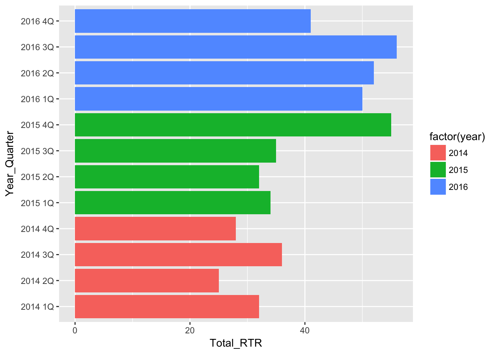
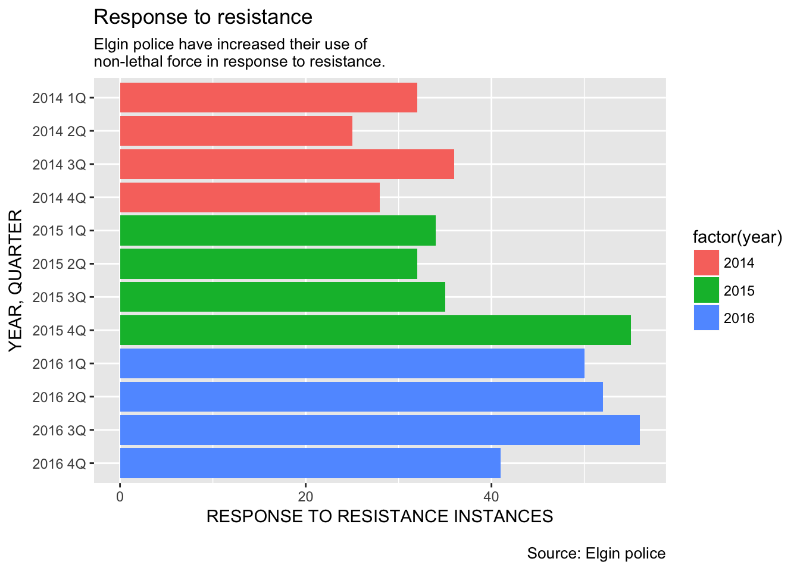
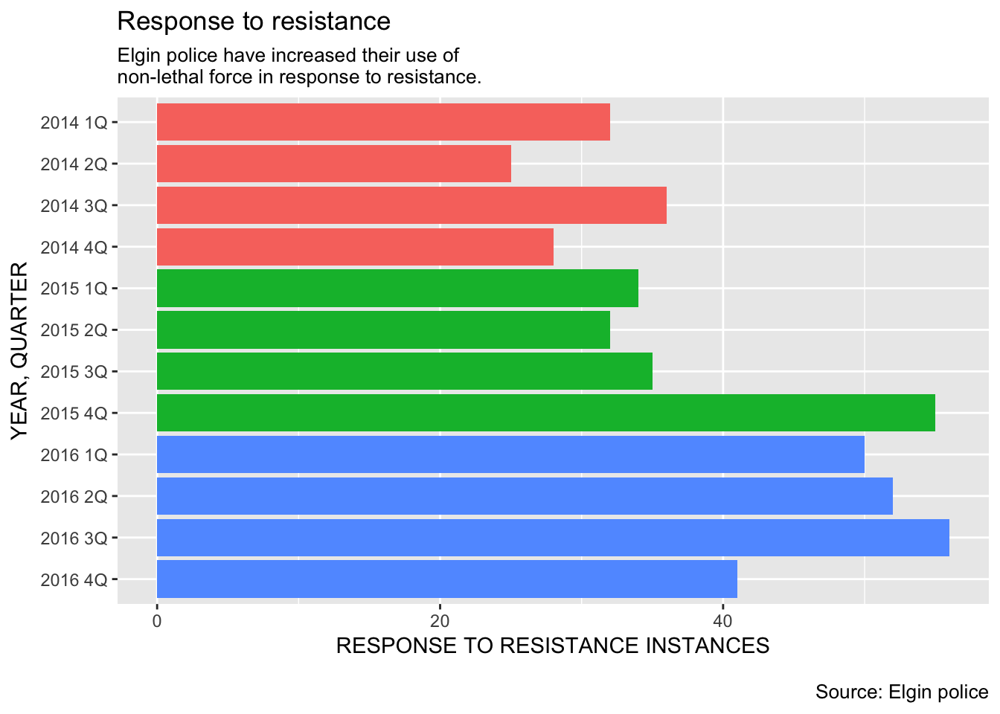
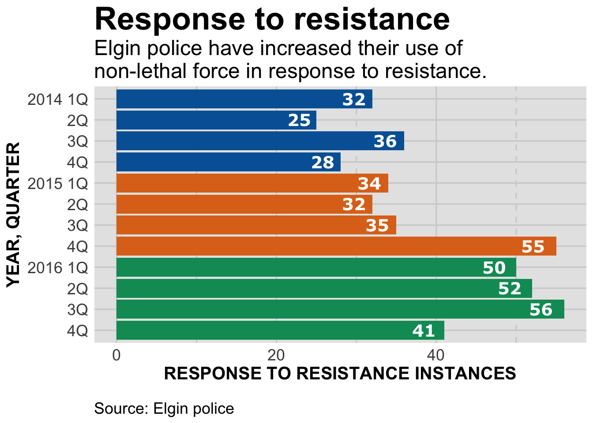

08_ggplotBars
Building a bar chart with ggplot2
We’re going to build a bar chart using ggplot2 showing the total RTR incidents by quarter. “Build” is the right word to use, because we’re going to start with something simple and build to something that’s just about publication ready.
Publication ready means the chart is designed and sized appropriately for where it will appear. Ggplot2 makes this easier, but there’s still some work needed by you.
Let’s start by loading in the libraries and data we need.
library(readr)
library(ggplot2)
library(ggthemes)
df <- read_csv("dfCrime.csv")## Parsed with column specification:
## cols(
## Year_Quarter = col_character(),
## year = col_integer(),
## quarter = col_character(),
## Total_CFS = col_integer(),
## Total_arrests = col_integer(),
## Total_RTR = col_integer(),
## SOF_only = col_integer(),
## UOF_only = col_integer(),
## Transitions = col_integer()
## )summary(df)## Year_Quarter year quarter Total_CFS
## Length:12 Min. :2014 Length:12 Min. :18178
## Class :character 1st Qu.:2014 Class :character 1st Qu.:19663
## Mode :character Median :2015 Mode :character Median :21544
## Mean :2015 Mean :21341
## 3rd Qu.:2016 3rd Qu.:22753
## Max. :2016 Max. :24715
## Total_arrests Total_RTR SOF_only UOF_only
## Min. : 889.0 Min. :25.00 Min. : 6.00 Min. :15.00
## 1st Qu.: 947.8 1st Qu.:32.00 1st Qu.: 9.75 1st Qu.:16.00
## Median : 994.5 Median :35.50 Median :12.00 Median :19.50
## Mean :1013.2 Mean :39.67 Mean :11.67 Mean :21.92
## 3rd Qu.:1046.2 3rd Qu.:50.50 3rd Qu.:13.25 3rd Qu.:25.75
## Max. :1246.0 Max. :56.00 Max. :19.00 Max. :35.00
## Transitions
## Min. : 2.000
## 1st Qu.: 3.000
## Median : 6.500
## Mean : 6.083
## 3rd Qu.: 8.000
## Max. :12.000Let’s create a basic bar chart
basebar <- ggplot(df) +
aes(x = Year_Quarter,
y = Total_RTR,
fill = factor(year)) +
geom_bar(stat="identity") +
coord_flip()
basebar
And that’s it. That’s all you need to do to create a bar chart. Everything after this bit of code is about the design of the chart - colors, labels, headlines and such.
Here’s what the code does:
basebar <- is the variable that stores the chart commands. This way we’re not generating charts in the plot window until we call it.
ggplot(df) + calls ggplot and tells it what dataframe to use.
aes(x = Year_Quarter, y = Total_RTR, fill = factor(year)) + aes generally stands for aesthetics. Going forward, it’s kind of the catch-all place to put a bunch of information. In this case, we’re telling ggplot that we want our X axis to be the Year_Quarter column and the Y axis to be Total_RTR. We’re going to start a bit fancy and have the bars colored by year, using fill = and setting year as a factor. If you recall, factors group common things in the year column together.
geom_bar(stat=“identity”) tells ggplot that we want to plot the values in Total_RTR, not count up the different values to make a histogram.
coord_flip() makes it a horizontal chart instead of vertical.
Right away, there’s a problem: The bars are sorted by the Year_Quarter column, but 2016 4Q is at the top and 2014 1Q is at the bottom. You want to have people read charts left-to-right and top-to-bottom. Unfortunately we can’t just have ggplot reverse the order - we have to give ggplot something to sort by. Here’s how we’ll do that:
df <-df[order(df$Year_Quarter),]
df$sort <- seq.int(nrow(df))
head(df)## # A tibble: 6 x 10
## Year_Quarter year quarter Total_CFS Total_arrests Total_RTR SOF_only
## <chr> <int> <chr> <int> <int> <int> <int>
## 1 2014 1Q 2014 1Q 19217 989 32 12
## 2 2014 2Q 2014 2Q 21265 1178 25 7
## 3 2014 3Q 2014 3Q 21994 1246 36 11
## 4 2014 4Q 2014 4Q 18182 1047 28 6
## 5 2015 1Q 2015 1Q 18178 1014 34 10
## 6 2015 2Q 2015 2Q 19812 929 32 9
## # ... with 3 more variables: UOF_only <int>, Transitions <int>, sort <int>df[order(df$Year_Quarter),] This simply sorts the dataframe df by the column Year_Quarter. If you look at df at this point, you’ll see it’s sorted with 2014 1Q at top. If you wanted to sort it in the opposite way, you would use -order[. That trailing comma ,] is important.
It would be great if ggplot respected that, but no. So we have to record the order that we want.
df$sort<-seq.int(nrow(df)) creates a new column df$sort and puts the number of each row seq.int(nrow(df)) into that column.
Look at the first six rows of the dataframe using head(df). On the very far left, you can see the row number. Now look at the sort column and you can see we’ve stored that number there.
Now let’s use that to sort our bar chart.
basebar <- ggplot(df) +
aes(x = reorder(Year_Quarter, -sort), # Sort
y = Total_RTR,
fill = factor(year)) +
geom_bar(stat="identity") +
coord_flip()
basebar
x=reorder(Year_Quarter,-sort), tells ggplot to reorder the X axis. We first give the column we want ggplot to use for X (Year_Quarter) then tell it what to reorder by: -sort. Try using just “sort” instead of “-sort” to see what happens.
This is nice, but let’s add some descriptive text.
basebar <- ggplot(df) +
aes(x = reorder(Year_Quarter, -sort),
y = Total_RTR,
fill = factor(year)) +
geom_bar(stat="identity") +
coord_flip()
# add all the titles.
basebar <- basebar + labs(
title="Response to resistance",
subtitle="Elgin police have increased their use of\nnon-lethal force in response to resistance.",
x="YEAR, QUARTER",
y="RESPONSE TO RESISTANCE INSTANCES",
caption="\nSource: Elgin police")
basebar
basebar <- basebar + labs( Here we’re building up our graphic. We’re saying take basebar and add + labs(, or labels to it and store it in basebar <-. That can be a bit confusing, but it makes sense when you say it like this: Basebar now equals whatever we did before plus all this new stuff.
Every thing else should be obvious, but I want to point out that we need to put in line breaks with “\n”, otherwise the text just keeps going. Sometimes you’ll have to put in a line break, run the plot and then adjust it again.
Next, we don’t need a legend so let’s just remove it.
basebar <- ggplot(df) +
aes(x = reorder(Year_Quarter, -sort),
y = Total_RTR,
fill = factor(year)) +
geom_bar(stat="identity") +
coord_flip()
basebar <- basebar + labs(
title="Response to resistance",
subtitle="Elgin police have increased their use of\nnon-lethal force in response to resistance.",
x="YEAR, QUARTER",
y="RESPONSE TO RESISTANCE INSTANCES",
caption="\nSource: Elgin police")
# Remove lengend
basebar <- basebar + theme(legend.position="None")
basebar
The labels on the side are kind of repetative. Let’s substitute them with something that highlights the year.
basebar <- ggplot(df) +
aes(x = reorder(Year_Quarter, -sort),
y = Total_RTR,
fill = factor(year)) +
geom_bar(stat="identity") +
coord_flip()
basebar <- basebar + labs(
title="Response to resistance",
subtitle="Elgin police have increased their use of\nnon-lethal force in response to resistance.",
x="YEAR, QUARTER",
y="RESPONSE TO RESISTANCE INSTANCES",
caption="\nSource: Elgin police")
basebar <- basebar + theme(legend.position="None")
# Better x labels
basebar <- basebar + scale_x_discrete(
labels=c("4Q","3Q","2Q","2016 1Q","4Q","3Q","2Q","2015 1Q","4Q","3Q","2Q","2014 1Q")
)
basebar
Remember, we’ve flipped the X and Y axis, but the X axis is still the X axis. And, we’ve resorted the Year_Quarter column but we still have to assign the new labels as if we didn’t. That’s why they’re in reverse order in scale_x_discrete(labels=c(
We’re really getting close to a publishable plot! Now we’re going to do something very tricky: Let’s put the value of each bar on the bar itself.
basebar <- ggplot(df) +
aes(x = reorder(Year_Quarter, -sort),
y = Total_RTR,
fill = factor(year)) +
geom_bar(stat="identity") +
coord_flip()
basebar <- basebar + labs(
title="Response to resistance",
subtitle="Elgin police have increased their use of\nnon-lethal force in response to resistance.",
x="YEAR, QUARTER",
y="RESPONSE TO RESISTANCE INSTANCES",
caption="\nSource: Elgin police")
basebar <- basebar + theme(legend.position="None")
basebar <- basebar + scale_x_discrete(
labels=c("4Q","3Q","2Q","2016 1Q","4Q","3Q","2Q","2015 1Q","4Q","3Q","2Q","2014 1Q")
)
# add values to the bars
basebar <- basebar + geom_text(
position = "stack",
aes(x = Year_Quarter,
y = Total_RTR - (Total_RTR * 0.025),
hjust = 1,
label = Total_RTR),
size=5,
fontface="bold",
color="white"
)
basebarWhat we’re doing with geom_text is
put the value of each bar on top of the bar
place it all the way at the end of the bar minus a little bit so it’s kind of offset from the end
size the text and make it bold and white
This is one of those things you don’t have to understand to use, so we won’t go over it. But take some time to look it over and understand as it’ll be reused in later plots.
At this point we’ve got a pretty good looking plot. Let’s do one more thing to make it ready to go: style elements.
We’re going to do that by creating a function that uses a theme from the ggthemes library (538, modeled after the statistics website) with some modifications that make it useful for our publication purposes.
Let’s look at the final plot:
#---------------------
# This function set styles for the chart
# Be sure to run it before you plot
theme_gfx <- function(...) {
theme_set(theme_get() + theme(text = element_text(family = 'Verdana', size= 12, lineheight=0.9))) +
theme(
# edit background colors
plot.background = element_blank(),
legend.background = element_blank(),
panel.background=element_rect(fill="#E5E5E5"),
strip.background=element_rect(fill="#E5E5E5"),
# modify grid and tick lines
panel.grid.major = element_line(size = .6, color="#D2D2D2"),
panel.grid.minor = element_line(size = .6, color="#D2D2D2", linetype = "dashed"),
axis.ticks = element_blank(),
# edit font sizes
plot.title = element_text(size = 27,face="bold"),
plot.subtitle = element_text(size = 18),
legend.title=element_text(size = 13,face="bold"),
legend.text=element_text(size=14.7),
axis.title=element_text(size=15, face="bold"),
axis.text=element_text(size=13.5),
plot.caption=element_text(size=13.5, hjust=0),
strip.text = element_text(face="bold", size=13.5, hjust=0),
# This puts the legend across the top
legend.position="top",
legend.direction="horizontal",
# removes label for legend
#legend.title = element_blank(),
...
)
}
#-----Insert plot here -------------
basebar <- ggplot(df) +
aes(x = reorder(Year_Quarter, -sort),
y = Total_RTR,
fill = factor(year)) +
geom_bar(stat="identity") +
coord_flip() + theme_gfx() # add the theme
# add all the titles.
basebar <- basebar + labs(
title="Response to resistance",
subtitle="Elgin police have increased their use of\nnon-lethal force in response to resistance.",
x="YEAR, QUARTER",
y="RESPONSE TO RESISTANCE INSTANCES",
caption="\nSource: Elgin police")
# Remove lengend
basebar <- basebar + theme(legend.position="None")
# Better x labels
basebar <- basebar + scale_x_discrete(
labels=c("4Q","3Q","2Q","2016 1Q","4Q","3Q","2Q","2015 1Q","4Q","3Q","2Q","2014 1Q")
)
# add values to the bars
basebar <- basebar + geom_text(
position = "stack",
aes(x = Year_Quarter,
y = Total_RTR - (Total_RTR * 0.025),
hjust = 1,
label = Total_RTR),
family="Verdana", # set the font family
size=5,
fontface="bold",
color="white"
)
# Add a color scheme for the chart
basebar <- basebar + scale_colour_manual( values = c("#0063A5", "#DE731D", "#009964", "#DA2128", "#6F2C91") ) + scale_fill_manual( values = c("#0063A5", "#DE731D", "#009964", "#DA2128", "#6F2C91") )
basebar
#----- End plot --------------Now we have bold and upsized headlines. All the text is sized to work for online and print.
(If you’re working with the R script, you should click on the “zoom” button in the plot window to best see the results.)
I’m not going to spend a lot of time going over the function. For it to be applied to the graphic, you have to control-return it first.
Then simply add theme_gfx() to the graphic.
This style for the graphic is one we’ll use in the future. At some point we may tweak it and store it as a local library that needs to be loaded in to your R scripts. But for now, it’ll be one of the things at the top of each file.
Not included here is the windowsFonts line. It’s necessary for windows computers to recognize the font we want to use. It’ll throw an error on Mac computers, but that can be ignored.
We’ve also set the font family for the bar labels, and added a new color scale with scale_colour_manual and scale_fill_manual(
Please feel free to explore more, either by typing ?theme or googling “ggplot2 theme.”
For now, though, we have a publication-ready graphic. Next we’ll see how to create the files needed for publication.